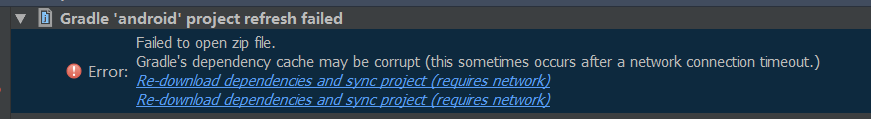
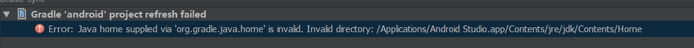
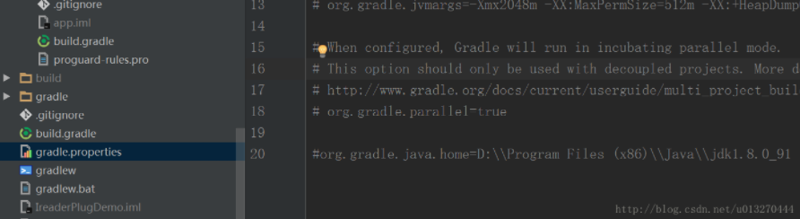

AS bug（长期有效）
BUG 1

今天在网上下载了别人的一个AS代码，在导入过程中出现了上图的这个错误，看到network我的反应就是可能与网络有关。后来百度翻译一下大概意思就是gradle依赖缓存配置可能损坏（这可能与网络状态有关）。相信大家知道怎么做了。直接在C盘用户文件夹下删掉.gradle文件夹即可。当然大家不用担心，删掉后再次打开as他会重新生成的。
以上是我百度到的一种解决办法，其实就是重新下载一遍grade，但是一般引起这种的问题的原因一般都是由于grade的下载缓慢的原因，而且只能在grade的版本少的时候能直接删除，否则还是应该对应下载。
BUG 2


解决办法:
在gradle.properties里面，把org.gradle.java.home 去掉。